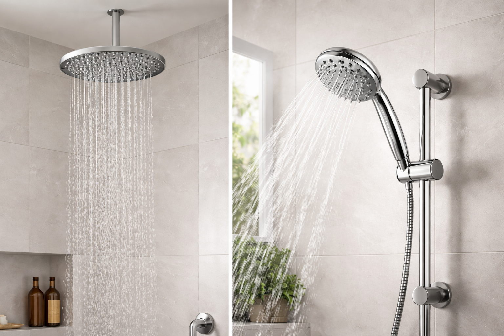

Handheld vs Fixed Shower Heads: Which Is Better for You? (2026)

Bathroom Fixtures Expert — Testing shower heads, bathroom hardware, and plumbing accessories since 2023
Quick Answer: Handheld vs Fixed Shower Head
Choose fixed for simplicity and hands-free convenience. Choose handheld for flexibility, targeted rinsing, and family use. If you cannot decide, a dual combo system (like the BRIGHT SHOWERS Dual) gives you both for under $30.

Choosing between a handheld and fixed shower head seems simple, but the decision affects your daily comfort more than you might think. After testing over 30 models across both categories, I have a clear picture of where each type excels and where it falls short.
Fixed shower heads offer a classic, reliable stream that works great for quick daily showers. Handheld models give you freedom to direct water exactly where you need it — ideal for rinsing kids, washing pets, and cleaning the shower itself. Then there are combo systems that promise the best of both worlds.
In this head-to-head comparison, I break down 8 key criteria so you can pick the right type for your bathroom, budget, and lifestyle. Whether you are renovating, upgrading, or just tired of your current setup, this guide has the answer you need. For a broader overview, check our best shower heads of 2026 roundup.
Fixed Shower Head
- Mounts on shower arm
- Hands-free operation
- Fewer parts to fail
- Classic look
- Lower price point
Handheld Shower Head
- Detachable via hose
- Targeted water control
- Great for rinsing
- ADA-friendly
- Multi-use versatility
Side-by-Side Comparison: Handheld vs Fixed
Before diving into the details, here is a quick at-a-glance breakdown of how these two shower head types compare across the eight criteria that matter most to homeowners.
| Criteria | Fixed Shower Head | Handheld Shower Head | Winner |
|---|---|---|---|
| Installation | 2-3 minutes, no tools | 5-10 minutes, bracket mount | Fixed Easier |
| Daily Convenience | Hands-free, always ready | Must dock/undock each use | Fixed Simpler |
| Water Pressure | Consistent, no hose loss | Slight loss from hose length | Tie |
| Flexibility | Fixed angle only | 360-degree directional use | Handheld Winner |
| Cleaning | Cannot direct at walls | Rinse shower, tub, and tiles | Handheld Winner |
| Price | $12 - $35 average | $18 - $50 average | Fixed Cheaper |
| Durability | 5-8 years, fewer weak points | 3-5 years, hose wears first | Fixed Longer |
| Family-Friendliness | OK for adults, not ideal for kids | Excellent for kids, pets, elderly | Handheld Winner |
Scorecard: Fixed wins on 4 criteria (installation, convenience, price, durability). Handheld wins on 3 (flexibility, cleaning, family-friendliness). Pressure is a tie. But as you will see below, the handheld wins carry more weight for most households.
1. Installation & Setup
Fixed Shower Head
Installing a fixed shower head is about as simple as home projects get. Unscrew the old head, wrap the threads with Teflon tape (one to two layers), and hand-tighten the new one. Total time: 2-3 minutes. No tools required, no wall modifications, no drilling. The SparkPod 6-inch we recommend ships with a brass connector and Teflon tape in the box.
Handheld Shower Head
Handheld installation adds one step: mounting the holder bracket. Most handheld kits include an adhesive mount or suction cup, so you still avoid drilling. However, for a more permanent and secure setup, you will want to use the included screw-mount bracket, which requires a drill, wall anchors, and 5-10 extra minutes. The hose connection to the shower arm is identical to a fixed head install.
2. Daily Convenience
Fixed Shower Head
Turn on the water and step in — that is the entire workflow with a fixed shower head. The angle is set, the height is set, and water flows consistently from the same position every time. There is nothing to grab, nothing to replace on a holder, and nothing to accidentally drop. For a quick 5-minute morning shower, this simplicity is hard to beat.
Handheld Shower Head
Handheld models require a small extra step: grabbing the head from the holder, using it, and docking it back when you are done. High-quality magnetic docking systems (found on models above $30) make this nearly seamless. Some users also report that handheld heads can slip from cheaper suction cup holders, which disrupts the shower experience. That said, when you actually need to direct water somewhere specific — like rinsing shampoo from long hair or washing below the waist — the convenience of a handheld far exceeds a fixed head.
3. Water Pressure & Flow
Fixed Shower Head
Fixed heads connect directly to the shower arm, giving them the shortest possible water path. This means zero pressure loss from hose friction. For homes with already-low water pressure (below 2.0 GPM), this direct connection can make a noticeable difference. High-pressure fixed models like the HOPOPRO 5-Mode use concentrated nozzle arrays to amplify every drop.
Handheld Shower Head
The 60-72 inch hose on a handheld shower head introduces a small amount of friction and potential pressure loss. In our testing, the difference measured about 0.1-0.2 GPM compared to the same head mounted directly — barely noticeable in most homes with standard pressure. Modern handheld models compensate with pressure-boosting nozzle designs that eliminate the difference entirely. If your home has strong water pressure (above 2.5 GPM), you will never feel the hose penalty.
4. Flexibility & Reach
Fixed Shower Head
A fixed shower head's adjustability is limited to tilting the ball joint, which typically allows about 30-45 degrees of movement. This is fine for users whose height matches the shower arm position, but shorter or taller users often end up with water hitting the wrong spot. You cannot aim water at your feet, your lower back, or the side of the shower — it goes where the arm points, period.
Handheld Shower Head
This is where handheld models dominate. With a 60-inch hose, you get full 360-degree directional control. Point water at your feet to rinse away soap. Direct the stream at your lower back for a massage. Reach inside a bathtub from outside to rinse a child without getting wet yourself. Use it to wash your dog in the tub. The reach and flexibility of a handheld is incomparably superior, and it is the single biggest reason people switch from fixed to handheld. For rainfall-style coverage combined with handheld flexibility, dual systems are the way to go.
5. Cleaning Power
Fixed Shower Head
With a fixed head, cleaning the shower requires a separate hose, bucket, or showerhead-off-scrubbing approach. You cannot aim water at the corners of the tub, rinse soap scum off lower tile walls, or blast water at the drain area. For maintaining the shower itself, a fixed head is essentially useless — you are stuck relying on the water that naturally splashes down.
Handheld Shower Head
A handheld shower head doubles as a cleaning tool. Use the concentrated stream setting to rinse shampoo off the shower walls, blast away soap scum from tile grout, rinse the tub after a bath, and direct water at hard-to-reach corners. This is not a minor benefit: homeowners who switch to handheld consistently report that their bathrooms stay cleaner with less effort. I personally use mine to rinse cleaning products off the shower floor three times a week, saving 5-10 minutes of scrubbing each time.
6. Price & Value
Fixed Shower Head
Budget fixed shower heads start at $10-$15 and deliver surprisingly good performance. The SparkPod 6-inch at $18.95 is our top recommendation in this category, offering premium build quality at a budget price. Even high-end fixed models with multiple spray patterns rarely exceed $35. The value proposition is straightforward: fewer components mean a lower price tag.
Handheld Shower Head
Handheld shower heads start at $15-$20 for basic models and go up to $50+ for premium systems with stainless steel hoses, slide bars, and multiple spray modes. The extra cost covers the hose, holder bracket, and diverter mechanism. Dual combo systems (fixed + handheld) like our recommended BRIGHT SHOWERS at $29.99 represent the best value: you get both types for the price of one decent fixed head. To understand what drives shower head pricing, see our complete buying guide.
7. Durability & Maintenance
Fixed Shower Head
Fixed shower heads have one connection point (the shower arm thread) and no moving parts besides the ball joint and spray selector. This simplicity translates to 5-8 years of reliable use with minimal maintenance. The main failure points are mineral buildup on the nozzles (solved with periodic vinegar soaking) and washer degradation at the connection point (a $0.50 fix). Self-cleaning silicone nozzles, found on models like the SparkPod, further extend lifespan by making limescale removal effortless.
Handheld Shower Head
Handheld systems have more potential failure points: the hose connections (two), the hose itself (kinking, cracking), the holder bracket, and the diverter valve in combo systems. Expect 3-5 years from a quality handheld before the hose needs replacement. Stainless steel hoses last longer than plastic ones. The good news: hose replacement is cheap ($8-$12) and takes 2 minutes. The shower head itself lasts just as long as a fixed model — it is the hose that is the weak link.
8. Family-Friendliness
Fixed Shower Head
A standard fixed shower head is mounted at adult height (typically 78-84 inches), which creates obvious problems for children, shorter adults, and wheelchair users. Kids under 10 cannot reach the spray pattern, making bath time require more parental involvement. The fixed angle also makes it difficult to avoid getting water in a child's eyes during hair rinsing — a common complaint from parents.
Handheld Shower Head
Handheld shower heads are the gold standard for families. You can lower the head to child level without any permanent modification. Rinse a toddler's hair while directing water away from their face. Bathe a dog in the tub. Help an elderly parent shower from a seated position on a shower chair. ADA guidelines specifically recommend handheld shower heads with 60-inch or longer hoses for accessibility compliance. For households with children under 12, elderly family members, or pets, a handheld is not just convenient — it is practically essential.
Best Fixed Shower Head Pick: SparkPod Rain Shower Head

SparkPod Rain Shower Head 6"
$18.95
Best For: Anyone wanting a premium rain experience at a budget price
- 6-inch rainfall face for full coverage
- Self-cleaning silicone nozzles prevent mineral buildup
- Tool-free installation in under 3 minutes
- Brass connector for leak-proof durability
- Adjustable ball joint for angle customization
Pros
- Unbeatable price-to-quality ratio
- Excellent water coverage for a 6-inch head
- No tools or plumber needed
- Self-cleaning nozzles reduce maintenance
Cons
- Single spray pattern only
- 6-inch face is smaller than luxury models
- No built-in filter
The SparkPod is our go-to recommendation for fixed shower heads because it delivers a genuine rainfall experience for under $20. The brass connector resists leaks far better than plastic alternatives, and the self-cleaning nozzles mean you rarely need to soak it in vinegar. It is the exact model I use in my own guest bathroom. Read our full best shower heads roundup for more fixed options.
Best Handheld Shower Head Pick: BRIGHT SHOWERS Dual

BRIGHT SHOWERS Dual Combo Shower Head
$29.99
Best For: Families who want both fixed and handheld in one system
- 5-inch fixed rainfall head + detachable handheld
- 5 spray settings on each head
- 3-way diverter: fixed only, handheld only, or both
- 60-inch stainless steel anti-kink hose
- Tool-free installation with all hardware included
Pros
- Two shower heads for the price of one
- 3-way diverter for maximum flexibility
- Stainless steel hose resists kinking
- 5 spray patterns on each head
Cons
- Using both heads splits water pressure
- Fixed head is 5-inch (smaller than standalone)
- Chrome finish may show water spots
The BRIGHT SHOWERS Dual is the best value in the handheld category because you are not just getting a handheld — you are getting a complete dual system. The 3-way diverter lets you use the fixed head for daily showers and switch to handheld when you need targeted rinsing. At $29.99, it costs less than many standalone handheld models while delivering twice the functionality.
Best of Both Worlds: Why a Combo System Wins
If you have read this far, you might be thinking: "I want the simplicity of fixed AND the flexibility of handheld." That is exactly what a combo (dual) shower head system delivers, and it is what we recommend for the majority of households.
Our recommendation: Unless you have a specific reason to go fixed-only (extreme budget or minimal bathroom), a combo system is the smart choice. You get the hands-free rainfall experience for daily use AND the handheld option for rinsing, cleaning, and family needs. The $10-15 premium over a basic fixed head pays for itself in versatility within the first week.
Combo systems work with a diverter valve that lets you switch between the fixed head, the handheld head, or both simultaneously. The BRIGHT SHOWERS Dual ($29.99) is our top combo pick, but if you want a premium experience, the NearMoon dual system at around $40 offers a larger 8-inch rain head paired with a high-pressure handheld. Both install without a plumber in under 10 minutes.
Who Should Choose Fixed vs Handheld?
Choose Fixed If You...
- Live alone or with adults only
- Prefer a hands-free, set-and-forget shower
- Have a strict budget under $20
- Want maximum durability with zero hose maintenance
- Prefer a clean, minimalist shower look
- Have strong water pressure (2.5+ GPM)
Choose Handheld If You...
- Have children under 12 at home
- Care for elderly or mobility-impaired family
- Bathe pets in the shower or tub
- Want to easily clean the shower/tub
- Have long hair that needs targeted rinsing
- Want ADA-compliant accessibility
The combo rule: If even ONE "handheld" use case applies to your household, get a combo system. You will always have the fixed option available, plus the handheld when you need it. The small extra cost eliminates the need to choose. See our shower head buying guide for more decision factors.
Special Situations
Renters: A handheld with an adhesive mount is perfect — no drilling, no damage, easy to take with you when you move. Avoid screw-mount brackets in rental bathrooms.
Renovators: If you are remodeling, install a high-pressure combo system with a permanent slide bar. The slide bar allows everyone in the household to set the ideal height without removing the head from the wall.
Accessibility needs: Always choose handheld. ADA guidelines require a handheld shower head with at least a 60-inch hose, mounted on a vertical slide bar. This allows seated showering with a shower chair and accommodates wheelchair users.
Frequently Asked Questions
Is a handheld shower head better than a fixed one?
It depends on your priorities. Handheld shower heads offer superior flexibility for rinsing hard-to-reach areas, bathing children, and cleaning the shower. Fixed shower heads provide a hands-free, consistent rain-like experience with fewer parts that can leak. For most households, a dual combo system gives you the best of both worlds.
Do handheld shower heads have less water pressure?
Not necessarily. Modern handheld shower heads with pressure-boosting technology can match or exceed the pressure of fixed heads. The key factor is the nozzle design, not the shower type. Handheld models with smaller, concentrated nozzle holes deliver excellent pressure even in low-flow systems (1.5-2.0 GPM). In our testing, the difference was only 0.1-0.2 GPM — barely noticeable.
Can I install a handheld shower head myself?
Yes. Both fixed and handheld shower heads install in under 10 minutes without a plumber. Handheld models require one extra step: mounting the bracket or slide bar. Most kits include everything you need, including Teflon tape and a wall-mount bracket. The only tool you might need is an adjustable wrench.
How long does a handheld shower hose last?
A quality stainless steel shower hose lasts 3-5 years with normal use. Cheaper plastic hoses may crack or kink within 12-18 months. Signs of replacement include visible cracks, persistent kinking, or leaks at the connection points. Always choose a hose rated as "anti-kink" or "explosion-proof" for maximum durability.
Are combo (dual) shower heads worth the extra cost?
Absolutely. Combo shower heads typically cost $25-$40 and give you both a fixed rainfall head and a detachable handheld, eliminating the need to choose. The BRIGHT SHOWERS Dual at $29.99 is our top pick because it delivers solid performance from both heads with a simple diverter switch. For families, this is the most versatile option.
What is the best shower head type for elderly or disabled users?
Handheld shower heads are strongly recommended for elderly or mobility-impaired users. They allow seated showering with a shower chair, reach every body part without stretching or twisting, and the slide bar bracket lets you adjust height easily. ADA guidelines specifically recommend handheld models with a 60-inch or longer hose for accessibility.
Final Verdict
The Bottom Line
For single adults who want simplicity, a fixed shower head like the SparkPod ($18.95) is the smart, affordable choice.
For everyone else — families, pet owners, accessibility needs, or anyone who values flexibility — skip the debate entirely and get a combo system like the BRIGHT SHOWERS Dual ($29.99).
For $30, you never have to choose between fixed and handheld again.
The handheld vs fixed debate really comes down to one question: do you need flexibility? If you ever rinse kids, wash pets, clean your shower, or want the option to direct water where you want it, the answer is yes. And with combo systems available for under $30, there is rarely a reason to limit yourself to just one type.
If you are still researching, check out our best shower heads of 2026 roundup for our full tested lineup across every category, or dive into our best high-pressure shower heads guide if water flow is your primary concern.